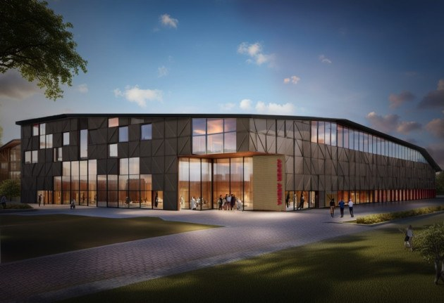

Styreleder Ole Lunde-Borgersen har sammen med fire andre håndballedere i Kristiansand skrevet et leserinnlegg i Fædrelandsvennen om hvorfor byen trenger Agder Arena.

Innlegget, «Agder Arena er en investering i neste generasjon», sto på trykk i Fædrelandsvennen 20. november. Bak det står ledere fra IK Gimletroll, KIF Håndball, AK28, Lund Håndballklubb og Norges Håndballforbund Region SørVest.
For lite halltid for barn og unge
Klubbledernes hovedpoeng er at det mangler halltid i Kristiansand – og at det går ut over barn og unge. De fem håndballklubbene i byen har til sammen rundt 100 lag. Håndballforbundet anbefaler to treningstimer i uka per lag, men i dag får lagene i snitt under halvannen time. Forskjellene mellom klubbene er store.
Også AK28 merker dette: Vi har måttet si nei til unge spillere som ville begynne på håndball.
Hva koster det å ikke bygge?
Skribentene er enige i at økonomien i Agder Arena skal vurderes nøye. Men de mener regnestykket ikke er komplett uten å ta med hva det koster å la være. Gimlehallen er over 40 år gammel og blir stadig dyrere å drifte, og ifølge kommunens egen saksutredning vil det koste mye å oppgradere dagens haller – uten at det gir én eneste ny time med halltid.
Agder Arena skal etter planen samle mange idretter under samme tak, med flere håndballflater og egne arealer for blant annet turn, kampsport og friidrett, i tillegg til undervisningsrom for skole. Hallen skal brukes av skolen på dagtid og av idrettslagene på ettermiddag og kveld.
Ikke bare håndball
Innlegget peker på at også turn, volleyball, bryting, kampsport, friidrett og skyting venter på mer plass. Ingen idrett kan løse dette alene – derfor står klubbene sammen.